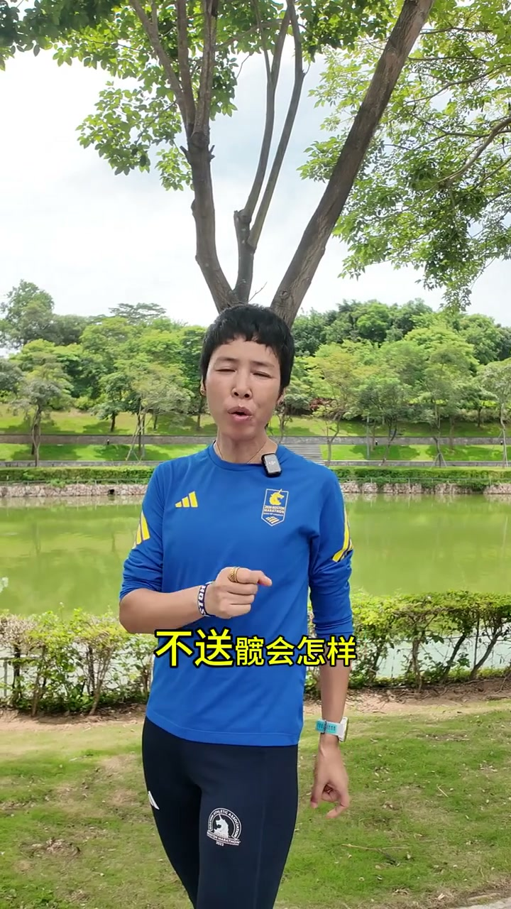
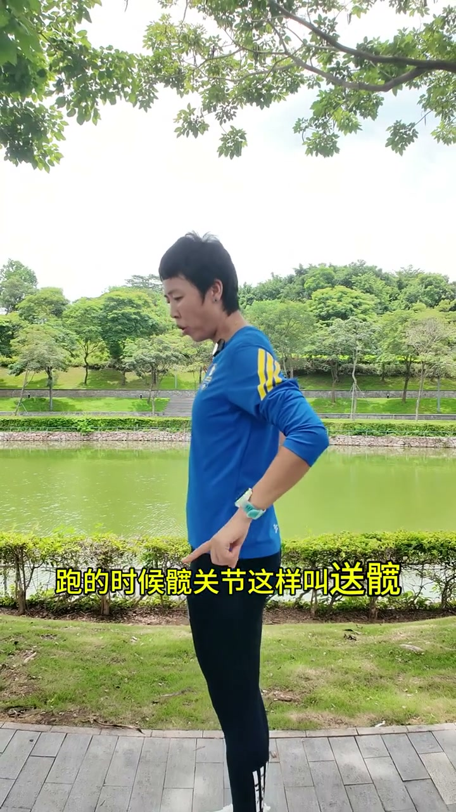
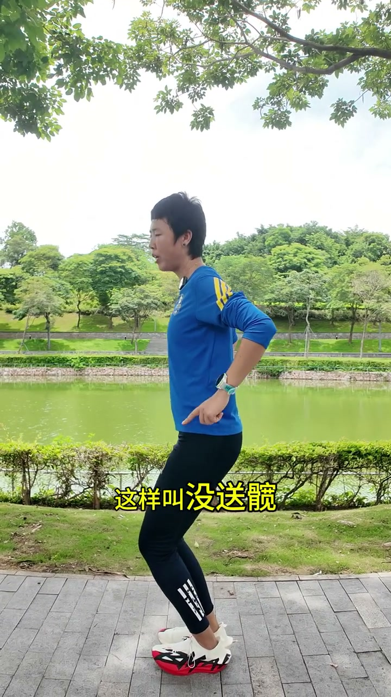
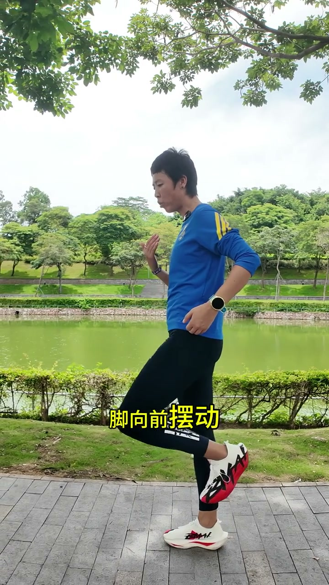
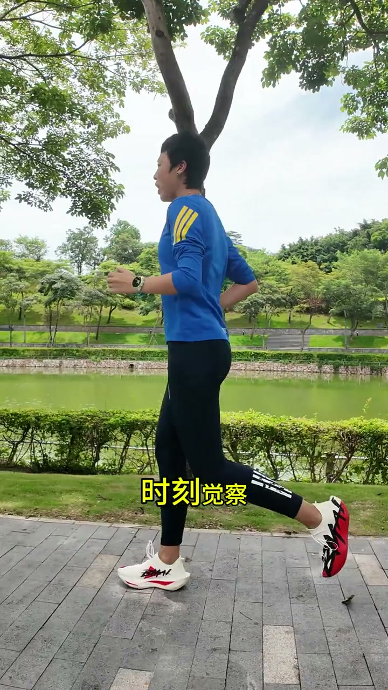
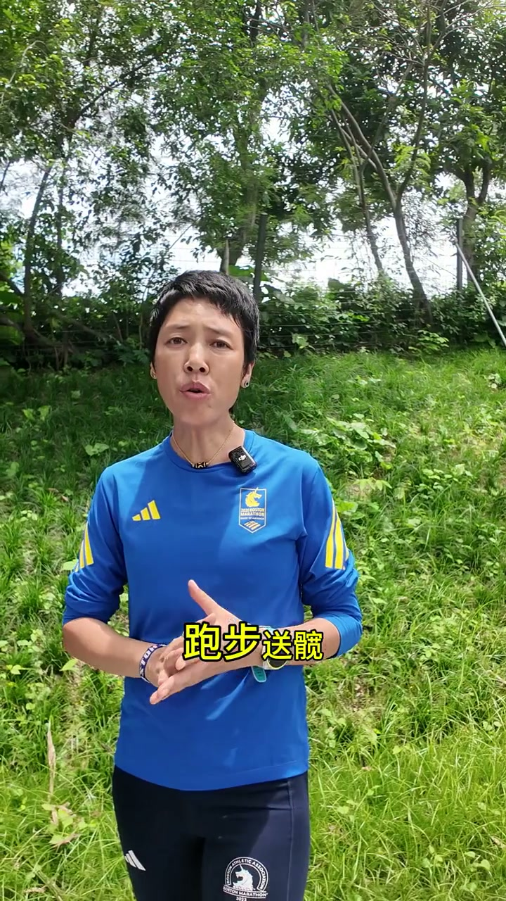

开场：不送髋会怎样？
视频一上来就抛出核心对比。00:00跑步要送髋，不送髋会怎样？答案很直接：后坐、屈髋、下坐、脚后跟先着地，迈步向前会造成膝关节的运动损伤。

[00:02] 开场定调：不送髋不是跑姿不美，而是直接伤膝盖
Opening tone-set: no hip drive isn't about ugly form — it directly injures the knees
什么叫送髋？
00:12UP 主面对镜头问出关键问题后，用身体演示讲解——跑步时髋关节往前走就叫送髋。

[00:15] 核心定义：跑的时候髋往前走就是送髋
Core definition: moving the hips forward while running is hip drive
送髋 vs 没送髋 对比
00:16UP 主做了两组快速对比演示："这样就送髋，这样就没送髋"，反复两次让观众看清楚区别。

[00:18] 对比演示：送髋的关键是脚、髋、头三点一线
Comparison demo: the key to hip drive is keeping foot, hip and head in one line
正确姿势：整体前倾 + 一条直线
00:22UP 主强调——跑的时候整体前倾，脚向前摆动落地的一瞬间，脚、髋、头在一条垂直直线上。
口播原文：「跑的时候整体前倾，脚向前摆动落地的一瞬间，脚、髋、头在一条垂直直线，这样就送髋」

[00:24] 整体前倾 + 脚髋头一条垂直直线 = 正确送髋
Forward lean + foot-hip-head in one vertical line = correct hip drive
体感训练：有人推着髋往前走
00:31UP 主给出了一个非常直观的体感描述——"跑动的时候，时刻觉着有人用手推着你的髋在往前走"。这个意象把抽象技术变成了可感知的身体信号。

[00:33] 核心体感：想象髋被人从后面推着走，带动整条腿自然向前
Core feel: imagine the hips being pushed from behind, carrying the whole leg forward naturally
送髋 = 省力一半
00:41视频结尾收得简洁有力——"跑步送髋，跑出风速，省力一半"。短短44秒，把送髋从抽象概念变成"脚髋头一线 + 有人推髋往前"的可操作口诀。

[00:42] 结语：送髋的核心价值——省力一半
Closing: hip drive's core value — half the effort
※ 44秒短视频，用对比演示和简洁体感把"送髋"讲成可立即尝试的动作。Whisper将"髋"部分识别为"宽"和"观"，根据运动术语修正。